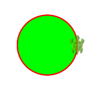
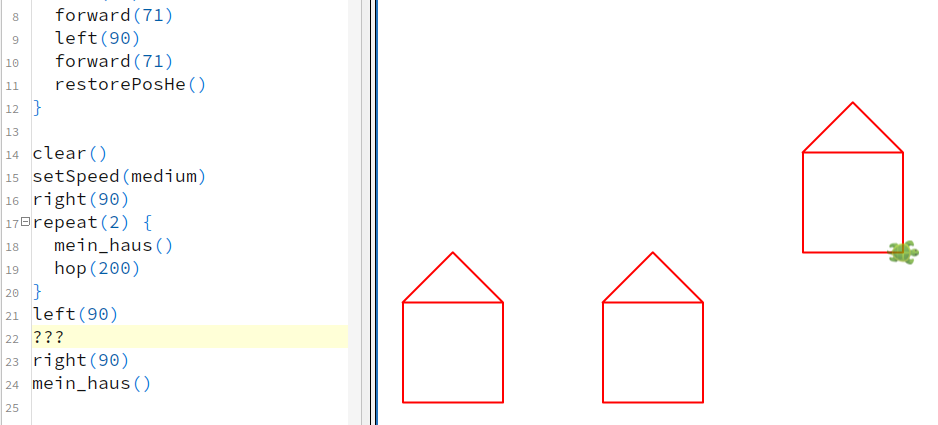
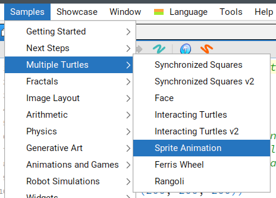
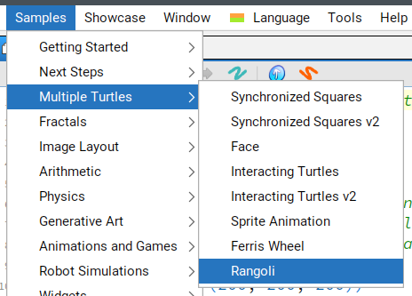

Wenn ihr weitermachen wollt, könnt ihr euch die Turtle-Welt aussuchen.
setSpeed(s) und
experimentiere mit verschiedenen Geschwindigkeiten, welche die
Dokumentation nennt: “Possible values are …”clear()
setSpeed(fast)
repeat(36) {
repeat(4) {
forward(100)
left(90)
}
right(10)
}setFillColor(c) und führe das
Beispielprogramm aus:
setFillColor(c),
setPenColor(c) und setPenThickness(t).
Versuche vorherzusagen, was folgendes Programm zeichnen wird, und teste
es danach aus:clear()
setBackgroundH(yellow,blue)
setPenColor(red)
setFillColor(green)
setPenThickness(3)
repeat(3) {
forward(100)
right(120)
}def mein_haus(){ immer nur dann ausgeführt werden, wenn
weiter unten mein_haus() aufgerufen wird.def mein_haus() {
savePosHe()
repeat(5) {
left(90)
forward(100)
}
left(45)
forward(71)
left(90)
forward(71)
restorePosHe()
}
clear()
setSpeed(medium)
right(90)
repeat(3) {
mein_haus()
hop(200)
}
Kojo hat viele Beispielprogramme. Das ist toll, um Ideen zu bekommen, was man programmieren könnte. Allerdings ist der Programmcode oft sehr lang und kompliziert. Im Folgenden sind kurze Programmstücke aus den Beispielen geholt, die ihr verstehen könnt:

clear()
setSpeed(slow)
repeat(4) {
setCostume(Costume.bat1)
forward(50)
setCostume(Costume.bat2)
forward(50)
right(90)
}
def blume(t:Turtle, c:Color) = runInBackground {
t.setSpeed(slow)
t.setPenColor(black)
t.setFillColor(c)
repeat(4){
t.right()
repeat(90){
t.turn(-2)
t.forward(2)
}
}
t.invisible()
}
cleari()
val schildkroete1=newTurtle(-200,100)
val schildkroete2=newTurtle(100,100)
blume(schildkroete1, green)
blume(schildkroete2, yellow)